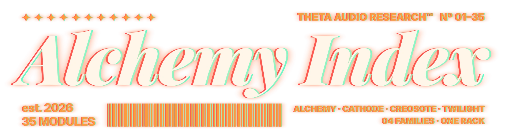
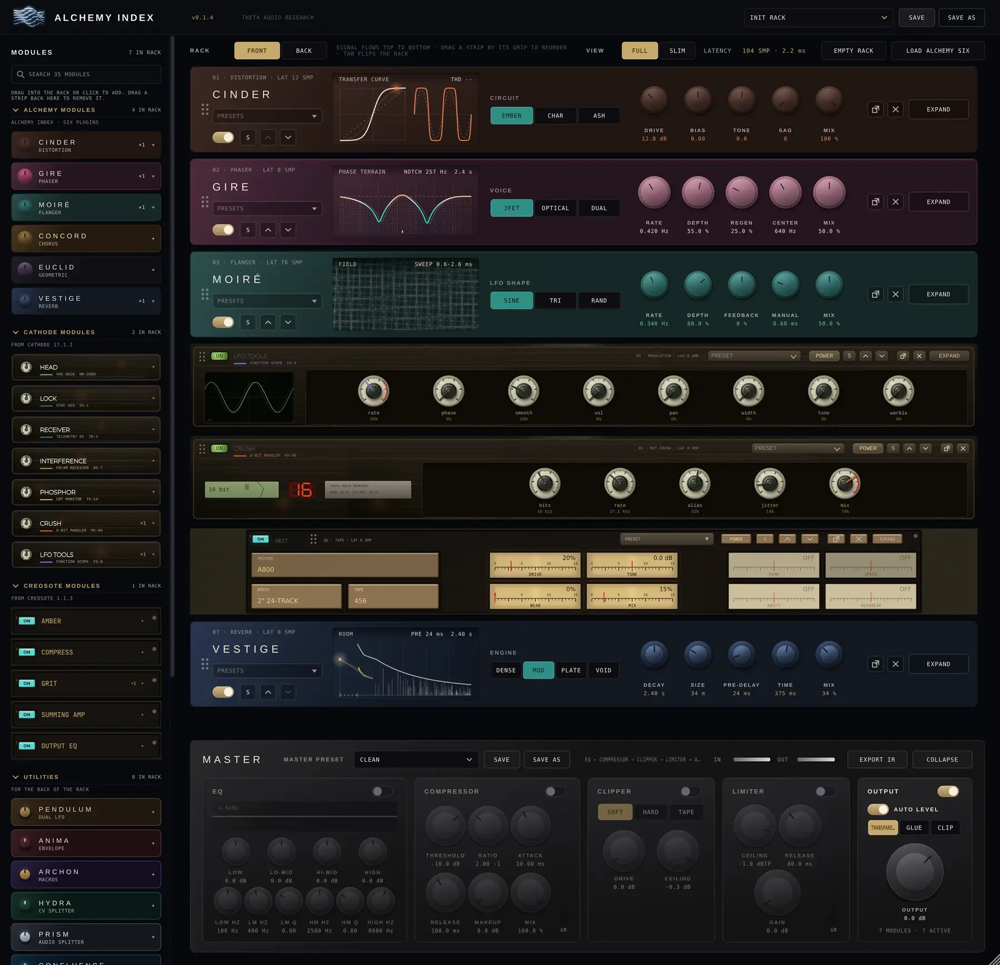
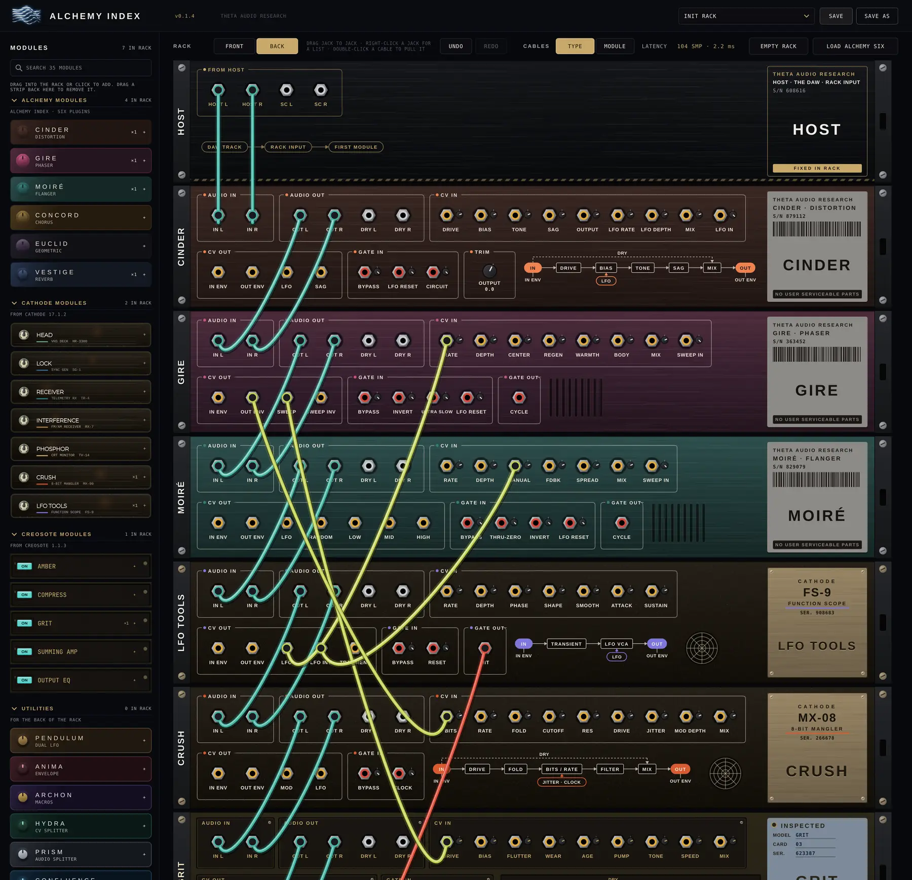
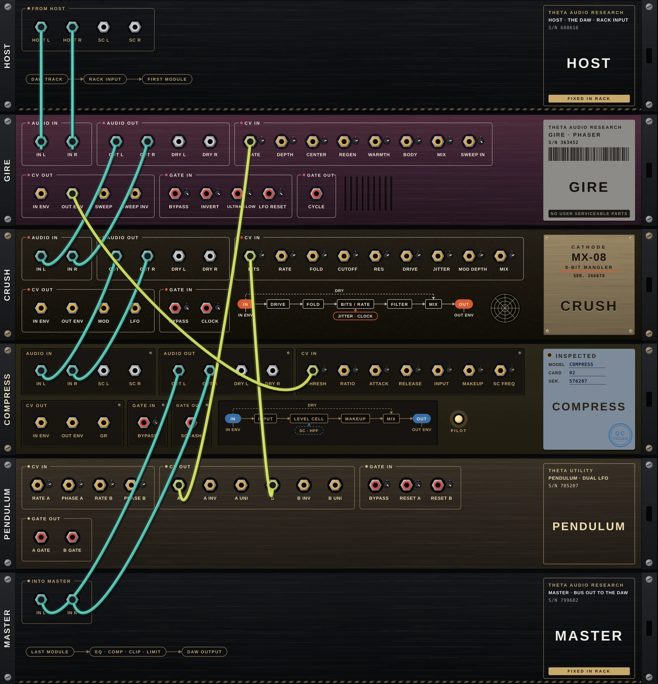
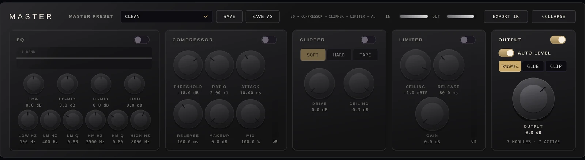

Thirty-five modules in one rack: the six ALCHEMY INDEX plug-ins, every CATHODE and CREOSOTE module, each with its own face and its own sound, five TWILIGHT modules, and twelve utilities made for patching. Stack them in any order, then turn the rack around and patch the back.


Drag a module in from the browser on the left and it drops into the chain where you let go. Signal runs top to bottom through the strips, then through the master section. Every strip wears its own plug-in's colours, knobs and displays: GIRE still looks like GIRE, CATHODE's modules sit on CATHODE's chassis, and CREOSOTE's read off amber VU glass.
All 35 modules in folding groups: ALCHEMY, CATHODE, CREOSOTE, TWILIGHT and the utilities. Drag one into the rack at any position, or click to add it at the end. Drag a strip back to remove it.
Reorder strips by their grip. Add the same module up to four times; repeats are numbered GRIT 1, GRIT 2.
Serial by default. Switch to parallel lanes, or go further on the back panel with real cables.
EXPAND opens a strip in place. The six ALCHEMY strips open to a compact card with every control and one live display, and the pop-out window shows the plug-in's full editor. Strips whose face already shows every control have no EXPAND.
Every strip has S, power and ×. Solo several at once. A bypassed strip keeps running silently, so it comes back instantly without a click.
Rack presets save everything. Each strip loads its own plug-in's factory and user presets, and the master has a preset menu of its own. SAVE and SAVE AS everywhere.
SLIM folds every strip to one line, so a long chain fits on screen. An expanded strip stays full size.
The rack reports only what the modules in it need, and updates as you add, remove or bypass them.
Every effect module is the full processor from its own THETA plug-in, with the same sound and the same face, and the utilities are built for the back of the rack. Pick a family below, then switch each card between the plug-in view, its strip in the rack, and its back panel.
Press TAB and the rack flips. Every module has audio, CV and gate jacks on its back. Patch an LFO into a phaser's rate, a drum hit into a reverb's HOLD, one module's level into another's drive. Add a module and it arrives already wired in stereo, in order, so nothing changes until you want it to.

Stereo pairs. Patch L and R comes with it, and moving a cable brings its partner too; hold ALT for one side. Every module also has DRY outs, so parallel tricks need no splitter.
Smooth control. SWEEP IN on GIRE and MOIRÉ and LFO IN on CINDER replace the built-in LFO with anything you patch. Each CV input has its own trim, so one cable can push a knob up or pull it down. Your DAW automation still works on top.
On or off. A gate into a switch holds it while high: VESTIGE HOLD, EUCLID FREEZE, GIRE INVERT, or BYPASS on any strip. A trigger is a short gate: it resets, steps and taps.
Audio goes to audio, CV and gate go to each other. While you drag, only the jacks that can take the cable light up.
Every output mults: patch one LFO into as many inputs as you like, each with its own trim, without a splitter.
Grab a plugged end to move it, double-click a cable to pull it, or right-click a jack for every place it can go.
Each effect prints its own path on the back in its trace colour: IN, the processor, MIX with the DRY tap, OUT. You can see exactly what DRY and the envelope outputs tap before you patch them.
BYPASS gate in, DRY L/R out, and IN ENV and OUT ENV followers, so any module's level can drive another.
Modules send their own signals out the back: GIRE's sweep, CINDER's LFO and sag, VESTIGE's tail, MOIRÉ's low, mid and high, the gain reduction from COMPRESS. Patch them anywhere.
COMPRESS and EQ take a sidechain, SUMMING AMP takes three extra stereo inputs, and AMBER opens an insert loop between its preamp and power stages. The host's sidechain bus arrives on the HOST panel.
A gate stops GRIT's tape and spins it back up, clocks CRUSH's sample rate, or taps VESTIGE's echo time. Triggers step VESTIGE's engine, CONCORD's voices and CINDER's circuit, and reset any LFO to the bar.
When a branch runs through a module with latency, every other path into the same input waits for it, so parallel chains meet sample-aligned.
MIDI IN brings the host's MIDI onto the back as a violet NOTE cable, with GATE, PITCH, VELOCITY, the wheels and two CCs as signals you can patch anywhere.
UNDO and REDO on the back's toolbar, or Cmd/Ctrl Z, step through every cable and every trim you've touched.
Cables and trims live in the rack preset and the DAW session. Colour the cables by signal type or by the module they come from.
Twelve small modules that exist to be patched, in the black and grey of the master section: LFOs, envelopes, macros, splitters, a mixer, the transport, a sequencer, a euclidean clock, chance, CV maths, and MIDI IN to bring your DAW's notes onto the back. They turn the back of the rack into an instrument of its own. Each has its own card in the module list.
Every chain ends in a master bus in ALCHEMY INDEX black and grey: EQ, compressor, clipper, limiter and AUTO LEVEL, with its own presets separate from the rack's. It looks after level and ceiling for the whole rack, so each module's own AUTO LEVEL can stay off unless you want it. Need the room? COLLAPSE folds it to one slim row with its preset menu, a switch per section, IN and OUT meters and the OUTPUT knob. EXPORT IR, in the master header, saves the impulse response of the whole rack as a WAV file, with every strip and the master EQ as you have them.

Latency is reported live for the modules in the rack. Most modules add none.
| MODULE | LATENCY IN THE RACK |
|---|---|
| EUCLID | 1024 samples |
| COMPRESS | 10 ms (480 samples at 48 kHz), its fixed lookahead line |
| MOIRÉ | 76 samples |
| GRIT | 16 samples |
| CINDER | 12 samples |
| Every other module | 0 |
| FORMATS | AU, VST3 and AAX |
|---|---|
| SYSTEM | macOS 11 Big Sur or later, universal (Apple silicon and Intel) |
| SIDECHAIN | Stereo host sidechain input, patchable anywhere on the back |
| WINDOW | Resizable |
| DISPLAYS | Each screen runs only while you can see it and redraws only when it changes |
| COPIES | Up to 4 of any module per rack |
| EXPORT IR | The whole rack's impulse response as a WAV, from the master section |
Your rack licence also unlocks the six standalone plug-ins: GIRE, CONCORD, EUCLID, CINDER, VESTIGE and MOIRÉ.
Activate once and every user account on that Mac is covered. The ABOUT panel shows your licence and frees the seat with DEACTIVATE THIS COMPUTER when you move to a new machine.
$249 USD for the whole rack.
The short answers.
Yes. Each effect module runs the same processing as its own THETA plug-in, and at MIX 0 every effect module passes your audio through untouched.
Yes. One ALCHEMY INDEX licence unlocks the whole rack and the six standalones: GIRE, CONCORD, EUCLID, CINDER, VESTIGE and MOIRÉ.
No. Every module you add is wired in stereo, in order, so the front of the rack works like any effects chain. The back is there when you want it.
Yes. CV adds to the knob's position, so automation and cables work together. ARCHON's eight macros are DAW parameters too, so one automation lane can drive anything in the patch.
Yes. The host's sidechain arrives on the HOST panel at the back, and COMPRESS and EQ each take a sidechain input. ANIMA's follower turns any signal into a CV.
No. Where paths meet, the faster ones wait for the slowest, so parallel branches line up to the sample.
Yes, in VST3 and AAX hosts. Put MIDI IN in the rack and its notes, pitch, velocity, wheels and CCs arrive on the back, ready to patch into anything.
Any macOS host that loads AU, VST3 or AAX plug-ins, Pro Tools included.